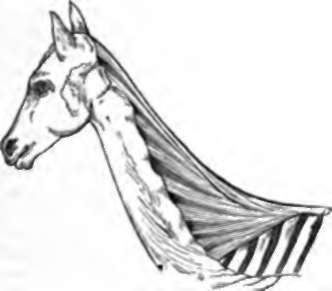

20. Peculiarities Of The Human Skeleton
Description
This section is from the book "Animal Physiology: The Structure And Functions Of The Human Body", by John Cleland. Also available from Amazon: Animal Physiology, the Structure and Functions of the Human Body.
20. Peculiarities Of The Human Skeleton
The most remarkable peculiarities of the skeleton of man, as compared with other animals, are connected with the maintenance of the erect posture.
The foot has a broad sole, and is arched both from behind forwards, and also from side to side, so as to give elasticity to the step. The straight position of the knee is characteristically human, no other animal but man being supported on ex tended knee joints; for though birds are also bipeds, they have the knees flexed in standing. The human knee joint is so constructed that, when fully extended, it remains in that position without muscular exertion, so long as the weight of the body presses down on it. And this can easily be demonstrated; for the patella is situated in the tendon of the extensor muscle of the knee, and when it is loose, that muscle is evidently relaxed: now, when one stands with the knees straight, the patella can be felt with the hand to be hanging perfectly slack; but as soon as the foot is lifted from the ground it becomes tightened, because then it is only by muscular effort that the knee is kept straight.
The femur in man is longer than in other animals; and by the length of this bone, when we stoop with bent knees and resting on the balls of the toes, the pelvis is thrown sufficiently backwards to balance the bending of the body forwards (fig. 27). If the thigh bones were short, it would be difficult to pick an object off the ground.
The pelvis also is short, expanded, and strong: the pillars of bone which convey the weight from the sacrum to the thighbones are stouter than the corresponding parts which have no such function in other animals; and the expanded blades of the iliac bones both give surface for the attachment of the large glutei muscles by which the trunk is extended on the top of the thigh-bones, and also help to support the viscera above them.
The bodies of the vertebræ increase rapidly in size from the cervical to the last lumbar, so as to bear the accumulated weight which they support; and the transverse processes of the thoracic and lumbar regions are thrown remarkably back on the arch, so as to bring the bodies as much as possible forward into the visceral cavity; a circumstance which will at once strike any one who compares even in a cursory fashion the lumbar vertebræ of a rabbit, sheep, or ox, with those of the human subject. In the thoracic region, the ribs, with the exception of the two last pairs, being attached by distinct articulations to the sides of the bodies of the vertebræ and to the transverse processes as well, have a direction backwards as well as outwards given to them, by which, before arching forwards, they include in their circuit two great fossæ at the sides of the column, which contain a large part of the lungs.
Even the peculiarities of the human skull are closely connected with the adaptation to the erect posture. It has already been pointed out that in quadrupeds the head is suspended by a strong elastic ligamentum nuchæ; and it is, in addition, supported by muscular action; but, in man, the head is balanced on the top of the atlas when he stands erect. This is an arrangement altogether peculiar to man, and is accomplished; in the first place, by the bones of the face being comparatively light, and, secondly, by changes in the form of the cranium, connected with the large size of the brain. These changes consist mainly in the base of the skull in front of the foramen magnum being shortened and curved downwards, and in the roof being greatly elongated and arched, so that the part of the occipital bone behind the foramen magnum, which in a quadruped looks backwards, is turned downwards, and a largo part of the brain is thus made to lie further back than the condyles by which the occipital bone articulates with the atlas.
Fig. 18. Ligamentum nuchæ OF THE Horse.
The elongation of the face downwards may be mentioned as a human peculiarity, as well as the want of projection forwards. This elongation is partly in connection with the development of spaces, in which the voice reverberates and acquires resonance, but cannot be altogether accounted for by that consideration. Rather, it is a physiognomical peculiarity of man, like the presence of a chin, well developed in the higher varieties of the race, but not in subservience to any special function.
In the skeleton of the upper limb there is no mechanism altogether peculiar to man; the completely developed clavicle, freely moving shoulder joint, pronation and supination of the forearm, opposability of the thumb, and complete power of handling and fingering, are all found among the lower animals.
Continue to: